RecRSI：以机制假设组织推荐算法的累积式发现
Tingran Gan、Zhouziyue Lu 等提出的 RecRSI，研究怎样让大模型研究 Agent 在有限实验预算内改进推荐算法。一作主机构为上海交通大学，合作机构包括复旦大学和美团。论文于 2026 年 11 月 2 日首次公开，本文按原始论文的方法与实验逐项解读。论文入口：arXiv:2611.02487。官方独立仓库 RecRSI 已核验可访问且与论文匹配；这不等于本次已复现其搜索实验。
推荐算法的表示、评分、训练目标和优化过程相互影响，有限预算下很难判断哪些机制应当一起修改。一次实验的结果又依赖参考设计和未改变的组件；如果只保留程序和分数，就难以把成功或失败转化为下一次有依据的研究问题。
1. 背景和问题
RecRSI 的研究对象是算法开发过程。系统得到一份初始推荐模型代码、任务数据和固定训练评估接口，随后提出并实现代码变更，训练候选，再根据开发集表现选择后续方向。最终交付仍然是一份普通的推荐算法，可以重新训练并进入原有预测流程。大模型主要在外层研究过程中工作，论文没有让语言模型在每次用户请求时直接生成推荐列表，也没有把用户对话视为主要评测任务。理解这一定位，才能避免把研究 Agent 的 API 花费和最终推荐模型的在线推理成本混为一谈。
推荐模型中一个局部修改往往会改变多个环节。以序列模型为例，用户向量的范数既影响物品排序，也影响训练目标接受的正负样本分数。如果把点积改为余弦相似度，却让训练仍使用另一个独立输出头，评估端的变化可能没有接受对应监督。相反，在训练和预测共同调用的评分函数上修改归一化与温度，会同时影响排序几何和梯度尺度。这意味着“改评分函数”不是一个脱离目标函数和实现路径就能评价的独立选项。
作者把这种具有具体计算或学习作用的设计称为机制，例如序列聚合、匹配几何、排序损失以及参数更新方式。代码差异和机制差异并非一一对应：两段写法不同的代码可能实现同一种归一化，而一个表面很小的修改也可能同时改变训练和预测。单纯保存候选程序，可以保留可执行结果，却不一定保留研究者最关心的问题：为什么做这个修改、它和此前设计有什么关系、哪些证据支持继续走这条路。
另一个困难是失败结果的解释。论文给出的真实搜索过程先发现成对目标有效，再尝试用 focal 加权替代它，结果退步。退步不意味着之前整条方向都不值得保留，也不证明“强调困难样本”这个大概念完全无用。更合理的后续行动可能是回到此前有效的成对设计，测试另一种评分几何。要作出这种决定，研究状态必须同时记住：失败候选从哪里构造、它试图反驳什么解释，以及哪个更早的候选仍是当前最优。
现有自动化系统并非完全没有这些能力。程序进化可以维护候选群体和选择策略，反思式 Agent 可以总结失败，推荐专用框架也可以做方向路由、积累实验技能。RecRSI 的论点更具体：需要把实现变更和可检验假设绑定，让反馈指向完整设计中的机制关系。论文没有证明所有既有系统只会盲目改代码；它比较的是在统一任务与资源约束下，不同研究组织方式能产生什么结果。
因此，本文最值得看的单位是“机制假设”。它包含参考设计、拟议机制组合、研究理由和预期观察。参考设计决定哪些组件保持不变；拟议组合规定新增、替换或移除什么；理由解释为什么值得花一次训练机会；预期观察则给结果解释提供方向。这些信息使一次训练不只是排行榜上的一个新点，也成为后续实验可以调用的证据。即便候选表现不好，仍可能减少某一种解释的不确定性。
论文把搜索空间构造、假设研究线和机制反馈分成三个阶段。空间负责让建议能落到合法源代码位置；研究线负责形成互补提议并完成实现与资格检查；反馈负责把性能、执行状态和成本放回研究上下文。这里的分工不是让更多角色本身成为贡献，而是降低想法与代码之间的断层，并使历史实验真正影响下一步选择。后文的组件消融也显示，角色拆分的局部贡献较小，空间与反馈如何配合才是更关键的证据。
从推荐系统工程看，这个问题常出现在离线模型迭代中：同样一个新损失，在某种评分器下有效，在另一种归一化下反而损害训练。若实验平台只记录参数和最终指标，团队容易重复尝试已经失败的组合，或者把依赖特定上下文的结论泛化成经验法则。RecRSI 提供了一种外显记录这种上下文的方式，但它仍依赖人类提供数据切分、可编辑接口和训练评估协议，不是无需领域知识的全自动研究。
对大模型 Agent 研究，论文也给出了清楚的边界：累积改进发生在外部被研究算法上，Agent 的底层参数并未在每轮更新。所谓递归自改进，主要指已评估设计和证据支持连续的算法修订，不能理解成语言模型自身能力在无监督地无限增强。研究过程有明确预算，达到评估机会或费用限制就停止；最优候选也只能在已测量过的范围内选择。
评估时还要区分搜索成功与模型泛化。研究 Agent 可以反复查看开发集分数，因此候选选择会受到开发集适应性影响。最终测试集重训能缓解直接把开发分数当结论的问题，但同样的搜索方式跨任务是否稳定，仍需要独立重复和不同任务协议。论文主表横跨多种初始模型及数据集，却包含源设计在目标环境上的重训复用，并不等于每个格子都进行了独立、等量的搜索。
本文因此围绕两个问题展开：结构化机制空间能否在给定实验机会内找到更好的候选；保留假设与设计上下文的反馈，能否比一般摘要更好地指导后续实验。主要指标仍是推荐质量，研究过程分析再补充 API、GPU、停止条件和具体机制对照。它不提供业务转化率、在线收入或长期用户满意度的直接证明，也没有把“发现新算法”的新颖性做成自动可验证指标。
还有一个容易漏掉的条件：人类先指定可编辑位置和允许机制轴，自动空间才开始生成。论文研究的是约束范围内的高效探索，而不是在完全开放代码库中自行发现业务目标。因此复现时应先确认接口和评估协议与原文一致，再讨论 Agent 的研究能力。
2. 方法
2.1 任务、参考设计与机制假设
外层搜索首先固定训练和验证协议，内层才训练候选模型参数。原文式 1 可以写为：
符号解释：$A$ 是候选算法实现，$\theta_A$ 是它在训练数据 $D_{\mathrm{tr}}$ 上得到的参数，$D_{\mathrm{val}}$ 是开发数据，$\Pi$ 是固定训练评估协议，$q(A)$ 是供搜索选择使用的开发质量。外层改变算法，内层优化参数，两种优化不能混为一体。初始算法也放在候选集合里，因此系统可以保留原模型，不必接受每次修改。最终测试重训是后续独立步骤，不直接参与外层候选选择。机制假设使用一个四元组表达：
符号解释：$C_t^{\mathrm{ref}}$ 是参考机制设计，$C_t$ 是提议的新组合，$\rho_t$ 是研究理由，$\epsilon_t$ 是预期观察；$R_t$ 为研究状态，其中 $H_t$ 保存假设与实验记录，$U_t$ 保存开放问题，$A_t^\star$ 是当前最优算法。这里的预期观察是待检验判断，不是强制实验满足的标签。实现后还记录实际构造的组合，以便发现代码与最初提议之间存在偏离。
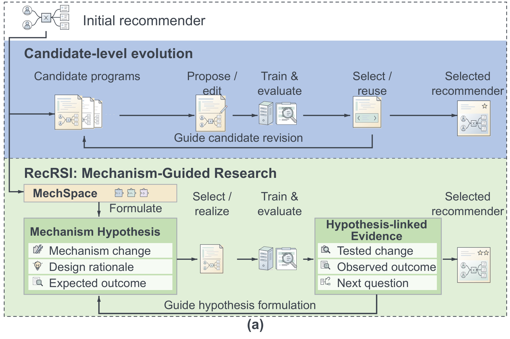
Figure 1(a) 上半部展示以候选程序为中心的提议、训练、选择和复用，下半部保留同样的可执行循环，但在提议前引入 MechSpace，在评估后形成与假设关联的证据。图中的回流箭头指向下一次假设形成，而不是简单把最新程序覆盖到工作区。变化的核心是记录什么，以及这些记录如何进入后续决策。左侧机制假设框明确列出变更、理由和预期观察；右侧证据框则对应测试过的变更、实际结果和下一个问题。两者通过训练评估相连，能把一个失败结果保留为研究证据。此处仅裁取原始工作流面板，原图右侧的进度曲线由实验章的资源图讨论，避免把效果曲线混入方法定义。两条工作流都经过真实训练和选择，因此下半部并没有取消实验或用语言推理替代验证。它改变的是回流的信息粒度：旧程序可作为实现起点，机制证据则可来自另一分支。这一区别解释了后文为什么会出现“恢复较早目标、参考最近失败、再试新评分”的行动，而不是不断在当前文件上叠加修补。
2.2 MechSpace：把机制想法变成可执行空间
符号解释：$T$ 是当前任务，$P_T$ 为可实施原语集合，$\Gamma_T$ 为允许组合的规则。一个原语不只是自然语言建议，还包含源码位置、输入输出类型、参数、实现要求及作用路径。生成者提出候选，审阅者检查覆盖、重复、组合关系和计算作用，确定性装配器检查 schema、修改目标和组合约束。这一过程依赖源代码层面判断，真正能否执行仍需后续资格检查，不能把语言模型审阅当成程序正确性的证明。
以 MoRec/CDs 为例，生成阶段提出十八个原语，经审阅保留十六个，分布于表示、评分、目标、更新、架构和采样六个轴。语法允许选择一个原语，或组合来自不同轴的两个、三个原语，同时限制修改目标。结果有十六种单项、一百零六种两项及三百七十二种三项名义组合。这不是穷举所有候选，而是限定研究者可提议的动作。空间构建一次后通过任务适配器复用，因此其质量与最初接口和允许轴有关。一个具体组合同时修改共享评分和排序目标。原文式 2 中的评分部分为：
符号解释：$z_u$ 和 $e_i$ 分别是用户序列与物品表示，横线表示带稳定常数 $\varepsilon$ 的归一化，$\tau$ 是温度，$s(u,i)$ 是训练与预测共同使用的分数。该实例取 $\tau=0.2$、$\varepsilon=10^{-8}$。归一化减弱向量范数直接支配排名的作用，温度再控制分数尺度。它有意义的前提是同一评分路径参与训练；若只在评估端添加一个新映射，却没有梯度训练，就违背了原语的作用路径要求。
符号解释：$V$ 为非 padding 的监督位置，$s_j^+$、$s_j^-$ 为同一共享评分器给出的正负物品分数，$m$ 为 margin，$\lambda$ 为辅助成对目标权重，$\mathcal L_{\mathrm{BCE}}$ 为正负 BCE 均值之和。实例中 $m=0.2$、$\lambda=0.5$。正负间距不足时，softplus 项产生较大惩罚；它与评分几何共同决定梯度，不能把二者的效果相加就视为整个组合的预期收益。focal 加权则是同一目标轴上的替代，研究空间会阻止互斥改动被无条件堆叠。
2.3 Research Line：提出、实现与评估完整设计
研究线有四个互补角色：机制组合者提出协同组合，谱系修订者延续已有方向，证伪设计者构造区分解释的实验，前沿架构者寻找其他提议未覆盖的方向。它们共享研究状态并形成提议池。角色名说明研究职责，但每个角色的输出都必须落在合法空间内，且说明参考候选。一个“改变评分”的假设还要确定从参考分支继承或恢复哪种目标，避免只拼接局部代码而丢掉周边设计。选择器并非另一个持续学习的 bandit。原文采用固定角色优先级和稳定平局处理，在每个机会块的开头以及剩余位置不足以覆盖尚未选择角色时，强制保证角色覆盖。其作用是在有限实验机会下保留互补研究行动，并不直接证明最优的实验分配策略。通过可行性和重复检查后，实现者拿到假设、源码和接口要求，构造完整候选。
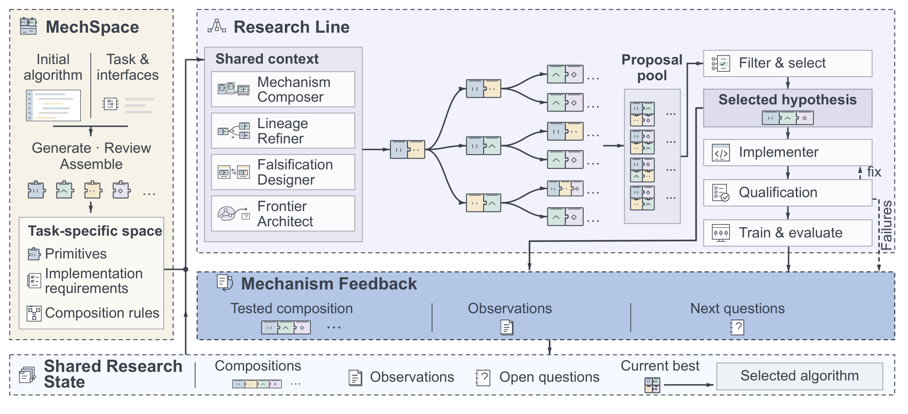
Figure 2 左侧的 MechSpace 输出原语、实现要求和组合规则，中央四角色依赖共享上下文提出分支，右侧提议池经过筛选后只执行选中的假设。实现、资格检查、训练评估顺序清晰：资格失败会进入修复或失败反馈，而不是直接获得一个推荐精度。底部 Mechanism Feedback 接收实际测试组合与观察，生成后续问题，再写入共享研究状态。图中最下方同时保存组合、观察、开放问题和当前最优，不只保留单一分数。这种数据流允许“构造参考”和“启发来源”来自不同历史实验：可以沿用早先成功设计，又利用最近失败来决定下一步。图里的失败箭头也提醒读者，研究预算会被无效实现消耗，因此真实评估次数、API 和 GPU 成本应分开核算，不能用一次循环等价一次成功训练。
资格检查包含接口与执行检查；只有通过后，候选才被接纳为一次真正的训练评估。失败会留下执行状态与错误信息，但不计入完成评估次数。这样的定义使“十二次真正评估”的上限可复核，也留下资源公平性问题：不同系统可能花费不同数量的失败尝试，或者被费用上限提前停止。研究线返回的是已评估集合中开发指标最高的算法，而不是语言模型最有信心的提议。
2.4 Mechanism Feedback：把结果放回设计上下文
反馈不仅提供下一步建议，还保留原始实验事实。每条记录连接假设、实际实现组合、参考设计、改变与保留的机制、性能差异、执行状态和成本。其状态更新由原文式 3 表示：
符号解释：$\widehat C_t$ 为候选实际实现的机制组合，$o_t$ 为执行与评估结果，$e_t$ 是结合当前状态产生的反馈证据。更新会改变历史和机制证据，只有开发质量更好时才更新当前最优。构造来源与观察来源独立保留，使失败候选能够影响下一假设，而无需成为下一候选的代码起点。它仍属于基于实验记录的解释，不是对模型内部因果机制的完整识别。
原文例子中，第二轮的 BCE 加成对目标开发 NDCG@5 为 0.3705；第三轮换成 focal 加权，下降到 0.3438。第四轮没有继续修补 focal，而恢复第二轮目标，再试余弦温度评分，达到 0.4097。可检验的问题因此从“是不是需要难例加权”转为“是否应改变正负间距的几何”。这里的提升归属于完整候选，单条轨迹不能独立量化反思的平均贡献；论文再用冻结决策点对照检验反馈是否有帮助。附录还给出 BERT4Rec 发现设计的具体评分与目标。原文式 5 是训练预测共享的无偏置双线性投影：
符号解释：$\mathbf q_j$ 是当前查询表示，$E$ 为绑定物品嵌入，$\mathbf b$ 为原有输出偏置，$W$ 是新投影矩阵。新增投影自身没有偏置；编码器、物品嵌入和原输出映射保持不变。它测试匹配几何与此前标签平滑是否互补，不是在推理端临时添加未训练参数。
符号解释：$y_j$ 为目标物品，$N$ 为全库大小，$V$ 为有效位置，$p_{j,i}$ 为物品概率。原文式 6 用九成目标监督和一成均匀平滑，padding 不参与平均。注意这里的全库平滑是训练目标，后文多数评测仍使用抽样候选集，两种“全库”不能互换。这些公式是发现出的推荐器实例，RecRSI 外层研究协议本身不强制所有任务使用同一个损失或评分函数。
3. 实验结果
3.1 十六个设置的最终测试与任务协议
主实验从 SASRec、MoRec、BERT4Rec、NGCF 四种初始推荐器出发，覆盖 Amazon CDs、Electronics、Office 与 MovieLens-1M。竞争系统为 RecHarness、DeepEvolve、OpenEvolve、ShinkaEvolve、Self-EvolveRec，作者称均使用官方开源实现复现。所有系统使用 GPT-5.6 Terra/Luna，任务内部共享预处理、划分和训练评估协议。候选按开发 NDCG@5 选择，再重训做最终测试，报告三个独立搜索的均值。附录特别说明，十六设置包含任务专用搜索胜者以及源设计在目标数据上的重训，不能称每格独立发现。
符号解释：$m$ 是搜索系统，$t$ 是目标设置，$r$ 是源搜索重复，$\bar q_{m,t,r}$ 是该次选定算法最终重训成绩的平均，$s_{m,t}$ 是三个搜索胜者之间的样本标准差。它衡量发现算法的波动，不是单个固定网络训练噪声的同义词。附录 bootstrap 对相关的目标评估整体携带，避免把同源设计在多个目标上的结果假装成独立样本。
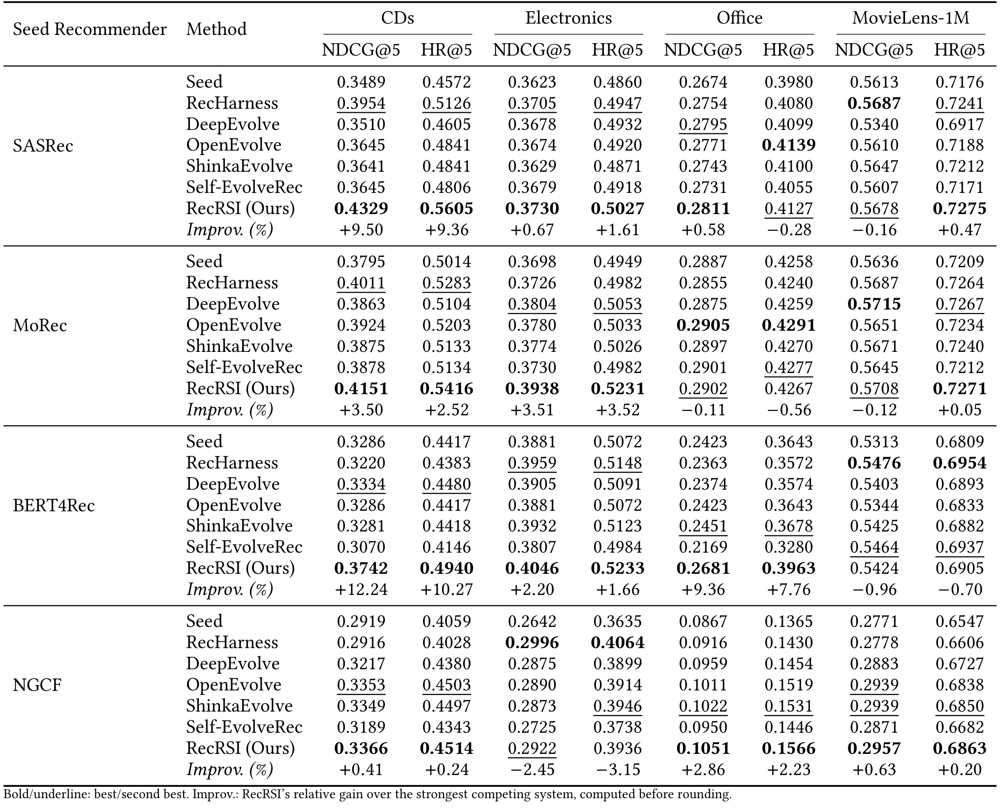
Table 1 每个初始推荐器占一个块，每个数据集有 NDCG@5 与 HR@5 两列。最后的 Improv. 行以该格最强竞争系统为分母，而不是 Seed。RecRSI 对初始算法平均相对提高 8.48% 和 6.88%，对逐格最强竞争平均相对提高 2.60% 和 2.20%；它在十六格中分别取得十一项 NDCG、十二项 HR 最高均值。负向不能省略：SASRec/Office HR 为 0.4127，低于 OpenEvolve 的 0.4139；SASRec/MovieLens NDCG 为 0.5678，略低于 RecHarness 的 0.5687。NGCF/Electronics 两项也不及最强竞争。表中强项如 BERT4Rec/CDs NDCG 从最强对照 0.3334 到 0.3742，但大幅提升集中在少数设置，所以平均收益不能解释成每个模型统一增加同样比例。
多数任务是一正例加九十九个固定负例的候选排序；NGCF/MovieLens-1M 才使用全库排序。SASRec 等任务采用用户最后两次留出，测试历史可包含训练与验证交互；BERT4Rec 的不同数据集还有独立协议。任务内同一协议支持系统比较，跨任务分数绝对值却不可直接比较，更不能把这些 HR 当成线上全库召回命中率。附录提供了负采样种子和排除历史规则，但本次未重新运行数据准备或训练。
附录 Table 7 显示搜索波动可很大，例如 RecRSI 在 BERT4Rec/CDs 的 NDCG 标准差 0.0379，而在 NGCF/MovieLens-1M 为 0.0001。八个源记录可链接的设置上，对逐格最强竞争的平均增益为 3.70%/3.06%，其百分位 bootstrap 区间分别为 [1.64%,5.57%] 和 [1.36%,4.61%]。这些区间支持特定汇总下的正向均值，不给每个单格差异的显著性保证，也不能外推到未搜索过的新业务数据。
3.2 研究成本、共同上限与提前停止
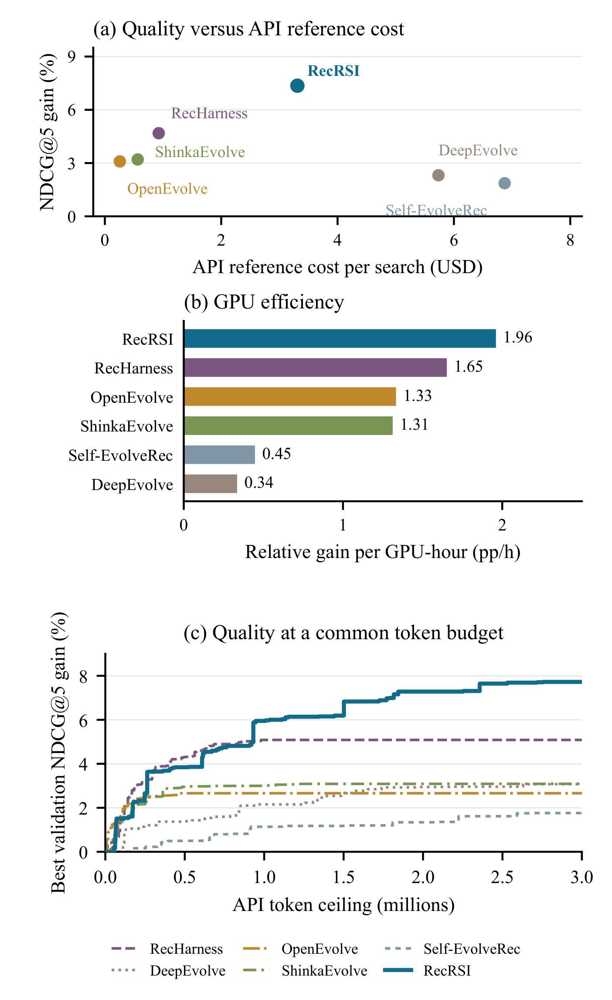
Figure 3 使用八个任务的资源对照，而不是主表全部十六设置。第一面板横轴是每次搜索 API 参考美元成本，纵轴是最终测试相对初始模型的 NDCG 增益；RecRSI 位于质量与 API 成本的 Pareto 前沿，但没有最低 API 费用。相对 RecHarness，平均多花 2.38 美元，测试增益从 4.68% 到 7.36%。第二面板的 1.96 表示每 GPU 小时的平均相对增益百分点，成本不含最终测试重训。第三面板统一输入输出 token 上限，在三百万 token 时开发增益 7.72% 对 5.09%，这是较有针对性的资源控制，但仍不保证各系统每个 token 调用同样模型、拥有相同运行时间。模型调用质量和失败修复成本都还会影响实际研究效率。
第一面板比的是最终测试质量，第三面板却是最佳开发前沿，两条纵轴虽然都叫相对增益，不能互换。作者把每个任务的搜索重复先平均，再对任务等权，避免大数据任务凭用户数压倒其他任务。GPU 效率也按平均增益除以平均 GPU 小时计算，不是先给每条轨迹算比值后求平均。这样的汇总适合说明整个研究方案的投入产出，但无法保证每一个任务都位于各自的成本前沿。
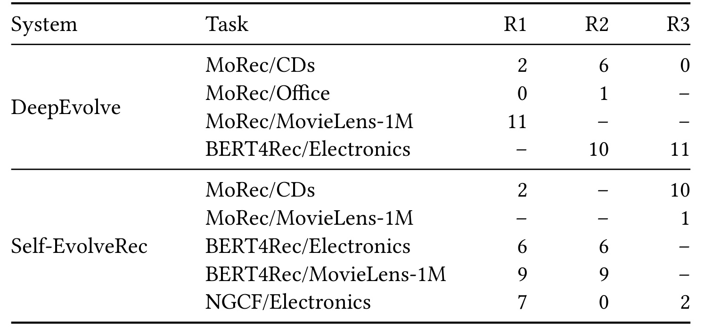
Table 10 是理解公平预算的必要补充。十二次 genuine evaluations 是共同天花板，只有完整训练评估才计数，失败实现和资格检查虽花资源却不计数。预先固定的七至八美元 API 保护使用已完成加在途开销触发停止，作者记录十八次 DeepEvolve 或 Self-EvolveRec 搜索因此结束。表内零次并不表示算法无需评估，而是预算消耗在完成评估之前；破折号表示该重复没有因这条保护停止。比如 DeepEvolve 的 MoRec/CDs 三次只完成二、六、零次。这个控制有现实意义，但同时改变不同方法实际获得的训练机会，因此不能把结果称为“所有系统都完成十二次等量实验”的纯组织结构对照。
资源核算包括初始化、机制空间构建、研究调用与失败尝试，GPU 小时包含分配用于资格检查及候选训练的时间；最终测试重训和迁移评估排除在搜索成本外。部署研究工具时应把这部分加回总拥有成本。论文还保留各系统原有搜索能力，但关闭网络访问，所以这里没有比较实时读论文对外部知识的利用。API 成本是作者定义的参考价格，不能直接当成用户今天可获得的精确账单。
3.3 机制空间与反馈如何相互作用
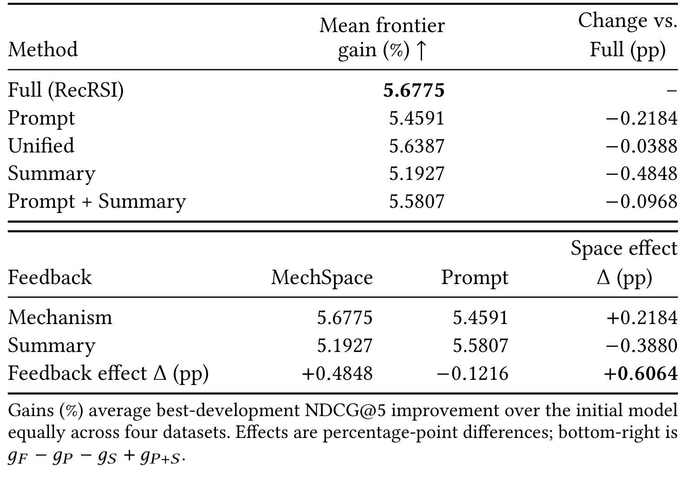
Table 2 上半部统计 MoRec 四数据集的最佳开发增益，完整系统为 5.6775%，显式空间改成自然语言 Prompt 为 5.4591%，角色统一后为 5.6387%，机制反馈替换成一般 Summary 为 5.1927%。这说明角色命名拆分的局部差距只有 0.0388 个增益百分点，不能把全部效果归因于四角色。下半部是空间与反馈的二乘二对照：机制反馈存在时显式空间优于 Prompt 0.2184 个百分点；一般摘要下显式空间却低 0.3880 个百分点，差上差为 0.6064。它描述相对开发增益的交互，绝不是业务 CTR 提高 0.6064 个百分点。原表两面板本来构成一个编号对象，保留在同图才能看清主结果和交互是怎样对应的。
作者把完整系统相对 Summary 的增益变化再计算为发现增益增加 9.34%，这个分母是 5.1927% 的 frontier gain，不是推荐指标的原始值。所有配置通常完成十二次评估，仅 MovieLens Prompt+Summary 完成十一次；作者比较统一到第十一次时前沿未改变。该补充降低了该处次数差的影响，但组件研究仍集中在 MoRec，不能直接断言同样交互在所有初始模型成立。
3.4 继续研究、重启与历史证据
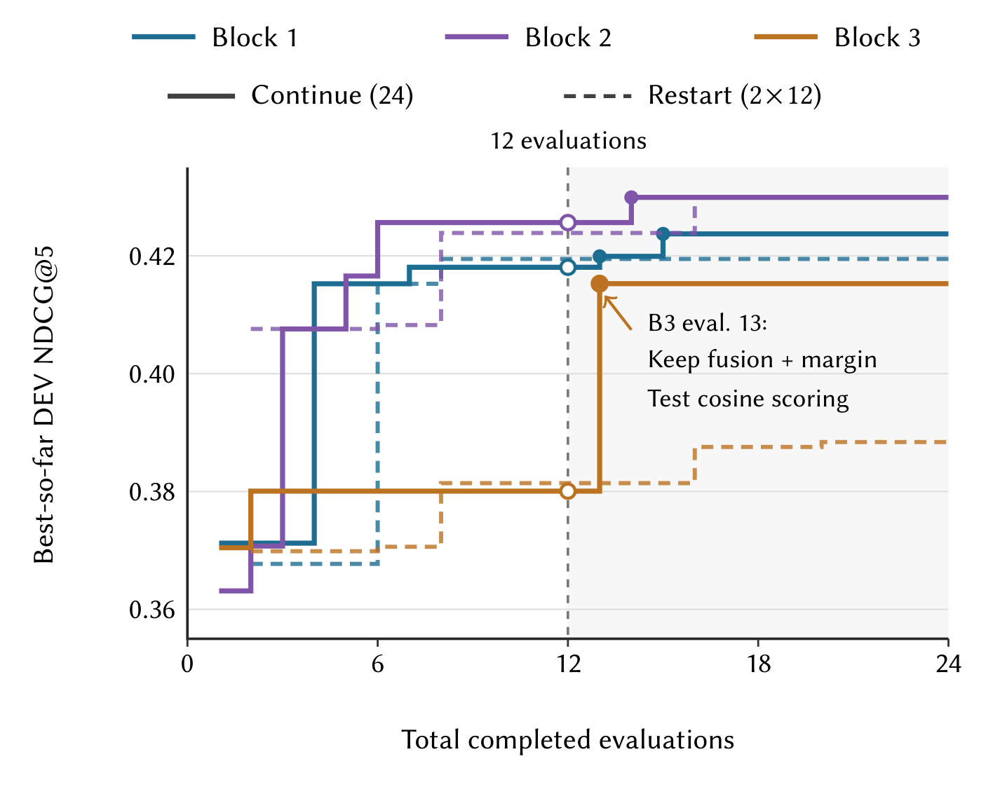
Figure 4 的横轴是总完成评估次数，实线继续同一次研究到二十四次，虚线取两次十二步搜索中的较优结果；三种颜色对应三个区块。第十二次的竖线标出短搜索边界。Block 3 从第二步至第十二步前沿停在约 0.3801，继续后第十三步组合已有近期三物品融合、margin 目标和温度 0.2 的余弦评分，跃升至 0.4153。该例表明停滞不必然意味着历史已无用，也说明观察到的后续收益来自具体机制组合，不能只归因为多花时间。Block 2 的实线与重启最终近乎重合，提醒读者继续不总能显著胜出。
曲线是最佳到目前为止的分数，天然单调，不能据此认为所有新候选都改善。在横轴总预算为两倍某一步数时，重启线取两条独立搜索各走该步数后的较优结果，使机会数对应起来。图中第十三步的注释是机制解释的具体落点：保留融合和成对目标，只测试余弦评分。若不保留这条历史说明，同样的跳升只会表现为一条不可解释的搜索曲线，无法指导后续组合。
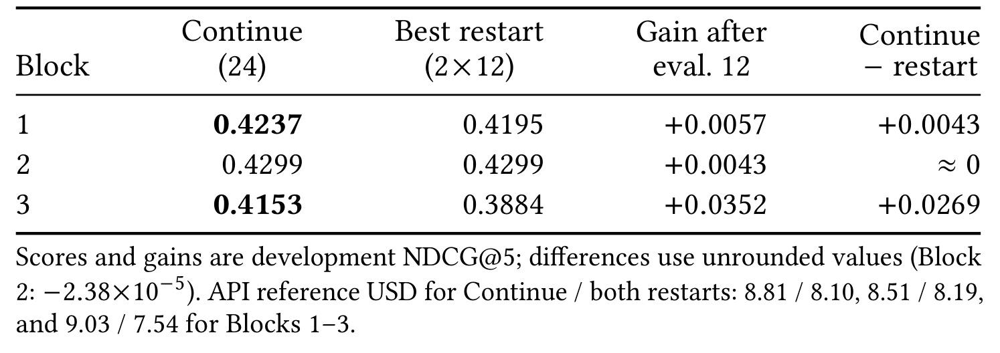
Table 3 给出三个区块最终开发分数：继续为 0.4237、0.4299、0.4153，重启为 0.4195、0.4299、0.3884。Block 2 的原始差为约负 0.0000238，四舍五入后才近似零，因此严格说它不是正增益。继续相对重启在其余两块高 0.0043 和 0.0269，均属于 NDCG 原始值差。评估次数相同但 API 成本不同，三组继续/双重启美元费用为 8.81/8.10、8.51/8.19、9.03/7.54，继续更贵。读这张表应同时保留评价机会相等和真实开销不等两个事实，不能把二十四次预算当作所有资源完全匹配。这也要求把单条继续轨迹与汇总结果分开看待。
表中“第十二步之后的增益”与“相对双重启的差”也是不同列。Block 2 继续后确实刷新过自身前沿，但独立重启同样找到了近似最优，所以这不能成为保留历史总比重新开始好的例证。Block 3 的相对重启增益约 6.92% 用 0.3884 为分母，而它第十二步后增加约 0.0352 用原始分数差表达。作者只给三个区块，尚不足以估计在新任务上选择继续还是重启的稳定决策阈值；实际策略仍应结合剩余预算、失败类型与探索覆盖判断。
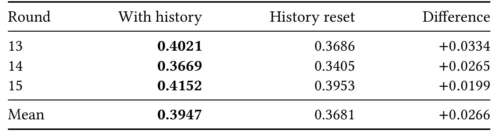
Table 13 从同一 MoRec/CDs 当前最优 0.4181 出发，对比历史保留和清空后连续三步新候选。保留历史的分数为 0.4021、0.3669、0.4152，清空为 0.3686、0.3405、0.3953；逐步都更高，均值差 0.0266。然而保留历史分支的这些新候选仍低于出发时 0.4181，所以这是“下一候选质量更好”的证据，不能说三步都刷新最优。最终一步历史分支保留评分器并把物品嵌入梯度裁到范数 0.5，清空分支改用成对 logistic 目标。
比较中的“同一起点”只固定最初当前最优，后续三步会沿着各自决策展开，因而不是三个互相独立的一步干预。这里均值描述同一分支的连续候选质量，不能把三个样本当作重复搜索的置信度。两个分支的开发集和评价规则一致，历史带来的改进确有可观察输出，但它究竟来自避免重复失败、选择不同原语还是影响实现细节，需要更细的行动日志才能分解。表格最后的均值行保留原始精度，差异按未四舍五入数据计算，所以逐行显示值相减可能与差列略有不同。
3.5 冻结反馈点与自动空间比较
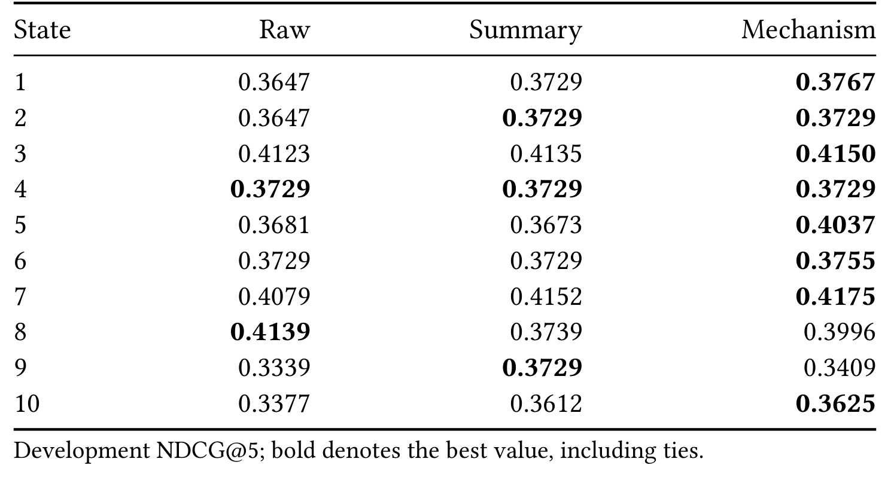
Table 4 在真实 MoRec/CDs 研究的十个冻结节点上，把原始记录、一般摘要、机制反馈交给同一后续实现评估流程。Summary 和 Mechanism 使用相同事实、诊断、反馈模型与输出上限，较能隔离反馈表述差异。机制反馈相对 Summary 七胜、两平、一负；State 9 中 0.3409 低于 Summary 的 0.3729，State 8 中原始记录 0.4139 还高于机制反馈 0.3996。State 5 的差距最大，0.4037 对 0.3673，对应余弦评分与成对目标的测试。小样本结果支持上下文组织有帮助，却不支持机制反馈不会误导，更不能证明每次解释都准确反映真实优化机制。
State 6 提供了另一个较温和的例子：卷积和 mask 改动退步后，机制反馈保持门控与 BCE 不变，改试权重为 0.1 的前缀均值表示，下一候选为 0.3755，而其余两种反馈为 0.3729。这种细小提升同样体现参考设计选择，但不能与 State 5 的大差距平均成固定收益率。反馈模型为 Terra，推理强度与二万 token 输出上限一致，并不代表实际输出长度和实现开销完全一样。十个节点还来自真实搜索，选择节点的分布可能影响优势比例，需要更多任务上的预注册节点来检验外推。
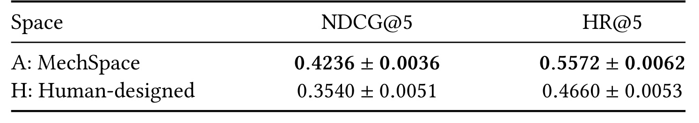
Table 5 比较在 SASRec/CDs 上由自动空间与人工空间找到的胜者，开发选择后各用三个重训种子测试。自动空间 NDCG 为 0.4236±0.0036，人工为 0.3540±0.0051；HR 分别为 0.5572±0.0062、0.4660±0.0053。自动胜者在加位置嵌入前归一化嵌入方向，人工胜者结合有界因果位置偏置与难度加权 BCE。两空间不是同一搜索域的不同编码：人工包含六机制、二十种单/双结构和九十五种参数赋值；自动有十六个固定参数原语、四百九十四种名义组合。共同十二次评估能说明实际构造流程带来更好候选，不能把约百分之十九点六的相对精度优势全归为“机器设计空间优于人类”的普遍结论。
这里的约十九点六是相对提升百分比，不是原始 NDCG 的百分点；其数值差为 0.0696。表中标准差来自胜者固定之后的重训，区别于主表三个搜索胜者的变异。自动空间能提供人工集合没有的归一化原语，是一个具体覆盖收益，但空间更大也会改变搜索难度与机会分配。若要进一步识别构造机制本身的优势，应让两种方法在相同原语数、参数域或已知有效机制覆盖下比较，而不是只扩大人工基线后重复测一个数字。
3.6 被发现算法的机制与条件效应
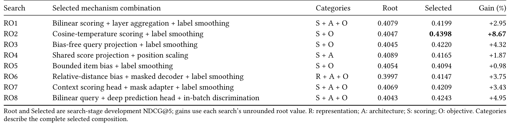
Table 6 列出三次主搜索与五次额外搜索在 BERT4Rec/Electronics 上的胜者，八个开发相对增益介于 0.98% 和 8.67%，均值 3.87%。评分和目标各出现在七种设计里，架构在五种里，表示在一种里，说明系统经常协调“怎样形成分数”和“怎样学习分数”。RO2 的余弦温度评分加平滑不改编码器，取得最高增益；RO4 则共享评分投影并缩放位置。这里统计的是选中机制的共现，不能由出现次数推断因果重要性。表中 Root 随搜索不同，Selected 的原始值不可跳过起点直接横排优劣，这也解释了为什么要同时展示相对增益与完整设计。
RO5 只把有界物品偏置与平滑组合，增益约 0.98%，而 RO8 同时采用双线性查询、加深预测头和批内区分，增益约 4.95%；组件更多没有直接对应最高收益。类别编码把表示、架构、评分和目标压缩记录，完整程序仍是复现所需证据，不能只凭组合名称重建训练。作者对 RO3 的事前假设还保留了先前 residual head 退步、平滑有效的观察，说明组合既可能来自成功继承，也可能来自失败后转向，而非事后给最佳结构编写理由。
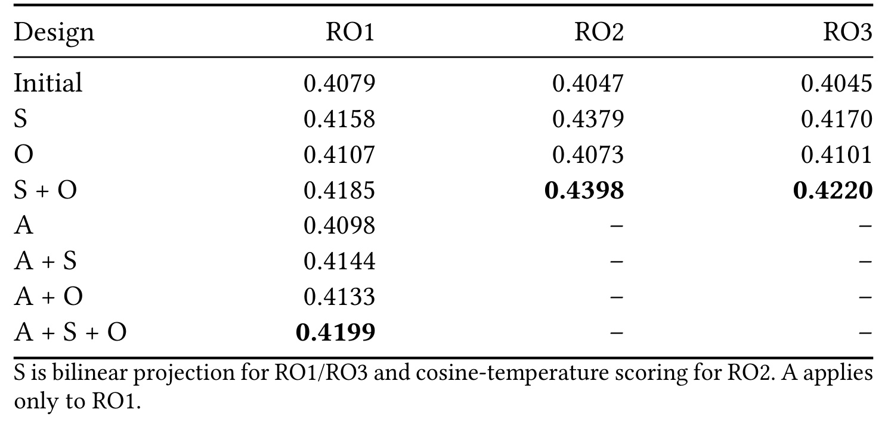
Table 11 进一步拆开 RO1–RO3 的组件。RO3 的初始值为 0.4045，评分单项 0.4170，目标单项 0.4101，组合 0.4220；组合高于任一单项，但交互约为负 0.0005，近似可加，不能称明显超加性。RO1 固定双线性评分时，层聚合在没有平滑时从 0.4158 降到 0.4144，加平滑后却从 0.4185 升到 0.4199，条件交互为 0.0029。这个例子最直接支持“同一机制效果依赖周边设计”的动机。各列采用固定训练种子，因此它是针对发现设计的受控机制检查，而不是多种子分布上的普遍交互定律。
RO2 中评分单项已经达到 0.4379，平滑只再增加 0.0019；不能把整体 8.67% 都算作平滑贡献。
主实验、预算图、冻结反馈点和组件表共同构成递进证据：最终测试说明搜索方案有正向平均结果；资源图检验研究投入；冻结点更直接比较反馈；组件表说明某些组合确有条件性。它们没有完成线上业务验证，也没有证明每条自然语言研究理由都正确。若在新场景复现，应沿着这几层分别测试，避免只复制主表的最佳均值就接受整套解释。
4. 总结
4.1 对研究工作流的判断
RecRSI 最有价值的设计是把“假设、参考设计、实现和观察”做成能连续传递的对象。它既保留失败实验的价值，也防止把最近失败代码自动作为下一轮唯一出发点。对推荐模型开发，这比只让 Agent 读取日志后随意改网络更容易审计；对通用研究 Agent，则提供了把外部环境结果转为下一步行动依据的具体范例。论文真正支持的是给定源接口、数据和预算下的算法发现效果，并非一种可在任何任务上无限递归改进的保证。
我会优先迁移其记录方式，而不是先照搬四角色数量。一个可用的实验条目应同时保存改动对应的学习路径、构造参考、预期现象、真实指标、失败状态和成本。论文 Unified 消融接近完整系统，说明没有充分证据把角色拆分视为首要收益来源。相反，空间与反馈在不同配置中改变作用方向，更值得先在自己的离线迭代日志上做小规模比较。
4.2 局限与复现重点
第一，评测大多采用固定抽样候选池，不能直接代表大规模全库检索，更不能等价于线上用户效果。第二，十六设置混合独立搜索和源设计重训，任务之间存在共享来源；应按源搜索聚合相关评估，避免把样本数夸大。第三，API 保护导致部分对照未完成共同评估上限，研究结构和可用机会的影响没有完全分离。第四，机制空间是人类接口约束下由 LLM 生成并审阅，作用路径评估不是形式证明，可能遗漏合法而有效的设计。第五，冻结反馈点和继续研究只有有限样本，存在反例和不刷新的候选，机制解释尚不能视为普遍因果结论。
此外，开发集在外层被重复使用，自动研究同样可能过拟合反馈。主表最终重训和附录搜索方差是必要保障，但还应观察全新任务与更大模型的迁移。论文没有把新颖性作为独立机器验收指标，因此“找到效果更好的代码”和“发现此前未知的算法原理”需要区别评价。代码仓库可访问，也不意味着所有外部模型版本、参考价格和训练环境都能原样恢复。
对实践者还有一项具体取舍：更细的机制记录会增加提示和状态维护成本。原文质量更好时也花了更多 API 费用，因此应先设可承受的研究预算，再判断多出的质量是否值得。若目标只是尽快修复失败训练，完整机制空间可能过重；若目标是跨周积累可检验的模型设计知识，假设与参考关系的长期价值才更可能显现。这是工作流选择上的判断，仍需在真实团队实验数据中验证。
后续首先复现一个小任务上的共同 token/API/GPU 三种预算曲线，明确提前停止是否改变结果排序。其次固定同一合法机制空间，对比原始记录、一般摘要和机制反馈，重复冻结决策点试验并报告全部失败，以检查解释组织是否稳定有效。再次把一个发现出的评分目标组合迁移到未参与搜索的时间切片与全库候选评测，分别测量开发适应、最终测试和服务成本。最后对照每条假设的预期观察与实际观察，审查代码作用路径是否真的对应所声称机制；只有这些核查完成后，才适合把一次搜索中的经验沉淀成可跨项目复用的研究规则。